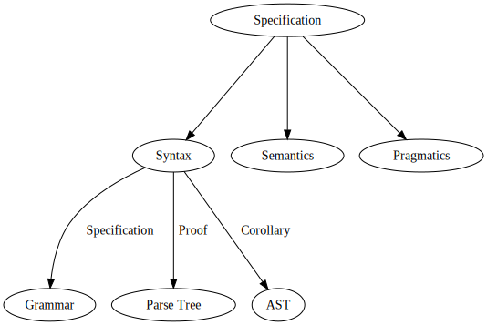
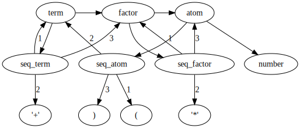
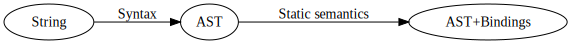

Course page: https://maxxk.github.io/programming-languages-2016/
Contact author:

BNF has a graph structure (actually, a directed hypergraph with per-edge ordered destination nodes). Parse tree is a tree derived from the graph (when you encounter a cycle, vertex is duplicated).

term ::= factor | term '+' factor
factor ::= atom | factor '*' atom
atom ::= number | '(' term ')'(3+2)*4+1class HashEntry
{
private:
int key;
int value;
public:
HashEntry(int key, int value)
{
this->key = key;
this->value = value;
}
int getKey() { return key; }
int getValue() { return value; }
};
const int TABLE_SIZE = 128;
class HashMap
{
private:
HashEntry **table;
public:
HashMap()
{
table = new HashEntry*[TABLE_SIZE];
for (int i = 0; i < TABLE_SIZE; i++)
table[i] = NULL;
}
int get(int key)
{
int hash = (key % TABLE_SIZE);
while (table[hash] != NULL && table[hash]->getKey() != key)
hash = (hash + 1) % TABLE_SIZE;
if (table[hash] == NULL)
return -1;
else
return table[hash]->getValue();
}
void put(int key, int value)
{
int hash = (key % TABLE_SIZE);
while (table[hash] != NULL && table[hash]->getKey() != key)
hash = (hash + 1) % TABLE_SIZE;
if (table[hash] != NULL)
delete table[hash];
table[hash] = new HashEntry(key, value);
}
~HashMap()
{
for (int i = 0; i < TABLE_SIZE; i++)
if (table[i] != NULL)
delete table[i];
delete[] table;
}
};In programming languages we usually name entities
public class SimpleDemoClass
{
public void GetData<T>(T obj)
{
Console.WriteLine("INSIDE GetData<T>,"+ obj.GetType().Name);
}
public void GetData(int x)
{
Console.WriteLine("INSIDE GetData" + x.GetType().Name);
}
public void GetxNextData<T>(T obj)
{
GetData(obj);
}
} class Program
{
Static void Main(string[] args)
{
SimpleDemoClass sobj = new SimpleDemoClass();
sobj.GetData("data is for testing by-Devesh");
sobj.GetData(95);
sobj.GetxNextData(1234);
Console.ReadKey();
}
} Scope of a binding is a textual region in program in which a binding is active. We may also use term scope to call the region of a program of maximal size in which no bindings are destroyed (masked).
char *a = "QWE123\0";
char* fun() {
dobule a = 0;
return a;
}Some languages (like ECMAScript/JavaScript or some kinds of LISP) have a concept of the dynamic scoping. Binding of identifiers occurs at run-time.
var a = 0;
function f() {
var b = a;
with ({a: 1}) {
b += a;
}
return b; // b = 1
}this in object-oriented language may be seen as either an implicit argument to a function or as a way of introducing a dynamic scope.
function g() {
return this.x;
}
var A = { x: 0, g }
var B = { x: 1, g }
A.g() // returns 0
B.g() // returns 1
g() // returns 2template<typename T>
T mul(int i, int j)
{
// If you get a compile error, it's because you did not use
// one of the authorized template specializations
const int k = 25 ; k = 36 ;
}
template<>
int mul<int>(int i, int j)
{
return i * j ;
}
template<>
std::string mul<std::string>(int i, int j)
{
return std::string(j, static_cast<char>(i)) ;
}If the language supports name overloading, the same identifier in the same place may have a different meaning depending on some external information (like typing). Usually in imperative languages name overloading is restricted to functions names.
int mul(int i, int j) { return i*j; }
std::string mul(char c, int n) { return std::string(n, c); }
int n = mul(6, 3); // n = 18
std::string s = mul(static_cast<char>(6), 2); // s = "110"
int n = mul<int>(6, 3); // n = 18
std::string s = mul<std::string>(54, 2); // s = "110110"
short n2 = mul<short>(6, 3); // error: assignment of read-only variable ‘k’_Generic keyword: http://stackoverflow.com/a/25026358)
Let us return to the topic of formal mechanized analysis of programs.

Syntax is a transformation from String to AST. Static semantics, in the same way, is a transformation from AST to AST with variable bindings information. How would we store this information?
Abstract syntax:
type var = string
type typ =
| Bool
| Arrow of typ * typ
type exp =
| Var of var
| True
| False
| App of exp * exp
| Abs of var * expHigher-order syntax captures the name binding:
type exp =
| True
| False
| App of exp * exp
| Abs of exp -> expParametrized Higher-order syntax captures the types of variables:
type 't var
type 't exp =
| Var : 't var -> 't exp
| True : bool exp
| False : bool exp
| App : ('d -> 'r) exp * 'd exp -> 'r exp
| Abs : ('d var -> 'r exp) -> ('d -> 'r) exphttp://adam.chlipala.net/papers/PhoasICFP08/
Conor McBride. «Ornamental Algebras, Algebraic Ornaments»
One base data type defines the induction structure, basic constructors:
data Nat where
0 : Nat
succ : Nat → NatThen we place an additional data (ornament) to the leaves of the induction structure:
data List [A : Set] from Nat where
List_A ← nil
| cons [a : A] (as : List_A)
data Vec [A : Set] from Nat where
Vec_A n ← nil [q : n ≡ 0]
| cons [n' : Nat][ q : n = succ n' ] (a : A) (vs : Vec_A n)class A { B b; }
class B { A a; }Suppose we started translating AST to static semantics. Before we process second line and see that B is a class, what is the static semantics of B at the first line?
Approach: fixed point (works for classical Domain Theory, doesn't work well in a constructive setting).
N.S. Papaspyrou. Formal semantics of the C Programming Language (PhD thesis).
Task 5.1. ** Implement a translator from simply-typed lambda calculus AST to HOAS in Haskell or any other language of your choice (except the original OCaml) which is expressive enough to represent HOAS.
Task 5.2. *** Implement a translator from simply-typed lambda calculus AST to PHOAS in Haskell or any other language of your choice (except the original OCaml) which is expressive enough to represent PHOAS.
Project Step 4. Implement a static formal semantics for your programming language (in Agda or Coq). Choose one of the following approaches.